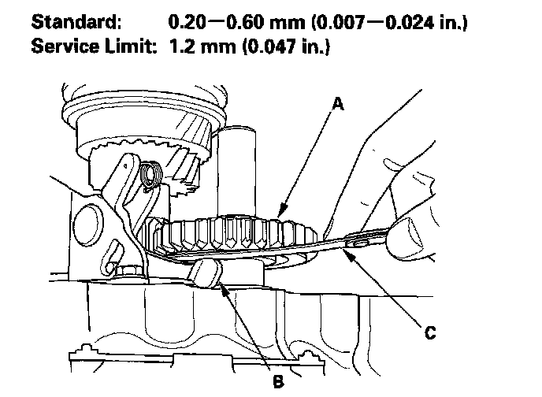
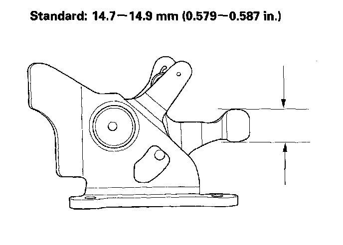

5-Speed Manual Transmission
Reverse Shift Fork Clearance Inspection1. Measure clearance between the reverse idler gear (A) and the reverse shift fork (B) with a feeler gauge (C). If the clearance is more than the service limit, go to step 2.

2. Measure width of the reverse shift fork.
^ If the width is not within the standard, replace the reverse shift fork.
^ If the width is within the standard, replace the reverse idler gear.
